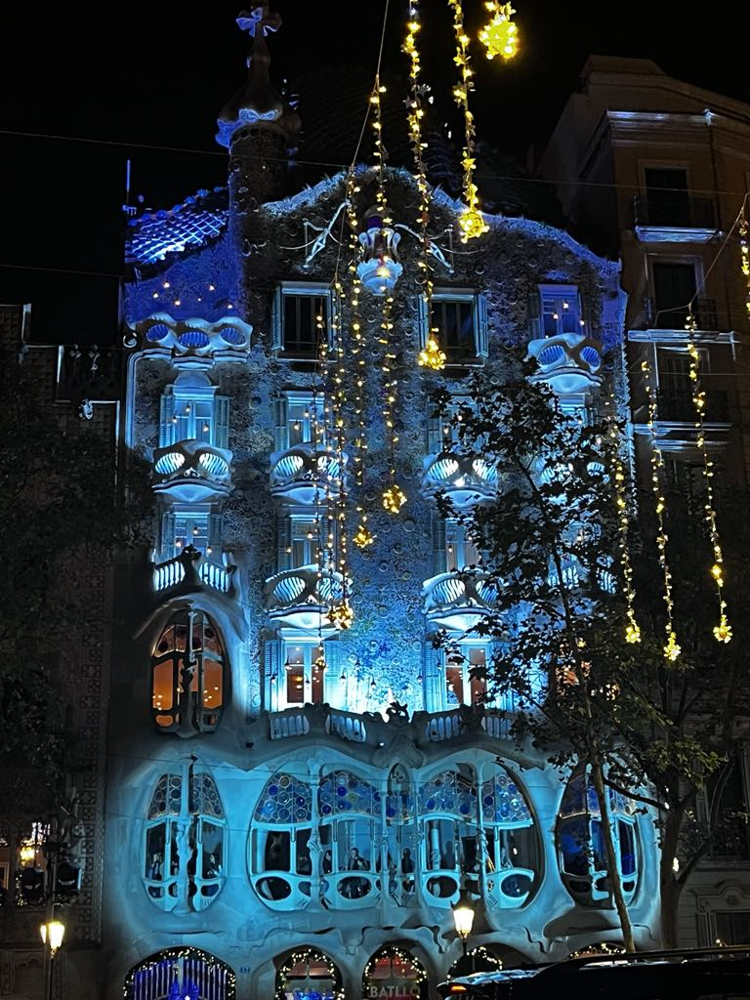
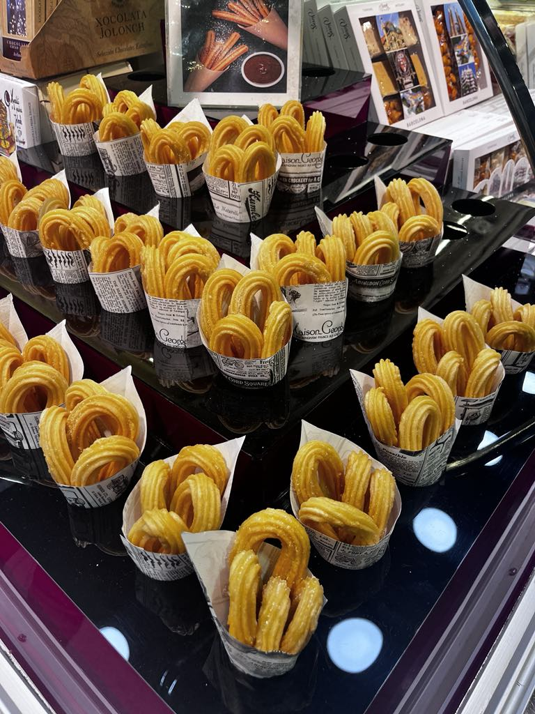

Visit the famous Sagrada Família, a unique basilica designed by Antoni Gaudí. Its towers and detailed façades are impressive and tell a story in stone. It’s still under construction, but already one of the most iconic landmarks in the world.
Don’t miss Park Güell – a magical place with colorful mosaics, curved benches, and scenic views. It feels like stepping into a fairy tale.
If you like the sea, head to Barceloneta Beach. You can sunbathe, swim, or just walk along the promenade with an ice cream in hand.


Explore the Gothic Quarter with its narrow medieval streets, old churches, and cozy cafés. It’s a great place to feel the city’s history.
You can also visit Camp Nou – the stadium of FC Barcelona. Even if you're not a football fan, the energy and passion of the fans are unforgettable.
Barcelona is a perfect mix of history, creativity, and fun – there's something for everyone.